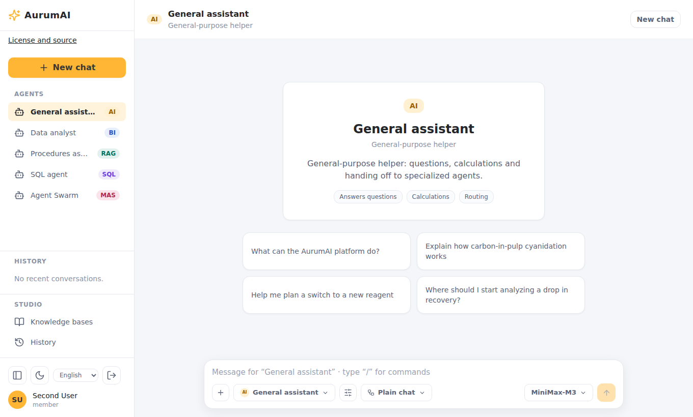

Installation and deployment
This guide gets AurumAI running and shows where each optional feature is switched on. Two supported ways exist:
| Method | Use for | Runtime isolation |
|---|---|---|
| Docker Compose | Local evaluation, development, a trusted single host | The backend holds Docker-socket authority |
Helm (charts/aurum-ai) |
Production on Kubernetes | Namespace-scoped RBAC and network policies |
Hermes Agent runs on both: as containers with the Compose overlay, as Pods with the
chart's hermes block (see Hermes Agent on Kubernetes).
For every environment variable see the
configuration reference.
Docker Compose
Requirements
Docker with Compose v2, Bash and OpenSSL. Free ports 3000, 3001, 3100, 8000, 8001, 8080 and 8082; the Compose file also uses loopback ports for infrastructure. Plan for about 8 GB of free RAM and 15 GB of disk for the base stack; optional RAG models and build caches need more.
Install
git clone https://github.com/tsrman/AurumAI.git && cd AurumAI
./scripts/bootstrap-dev-env.sh # creates .env with generated secrets
docker compose --profile build build runner # image the backend starts per conversation
docker compose up -d --build
curl --fail http://localhost:8000/ready
bootstrap-dev-env.sh creates the ignored .env from .env.example, generates the
required secrets and keeps values you already set when you run it again. Never commit
.env. Building the runner is required: the backend starts one container from it for
each conversation.
Keycloak and Temporal take longer to initialise than the APIs. A passing /ready does
not prove optional features are ready; check docker compose logs for the component
that is failing.
| Address | What |
|---|---|
http://localhost:3000 |
Chat app |
http://localhost:3100 |
Admin app |
http://localhost:8000, :8001 |
Business and Admin APIs |
http://localhost:8080 |
Keycloak |
http://localhost:8082 |
Temporal UI |
http://localhost:3001 |
Langfuse |
Log in at the chat address as user / user, or at the admin address as admin /
admin; user2 and admin2 belong to a second organization. These development
accounts are realm fixtures: replace them before real use.
With APP_DEBUG=true and no model gateway configured, answers come from a
development mock. That still exercises login, API, Temporal and the conversation
runner.

Connect a real model
Any OpenAI-compatible gateway works. In .env:
LLM_GATEWAY_URL=https://gateway.example.org # base URL without the final /v1
GATEWAY_API_KEY=operator-supplied-key
Recreate both API planes afterwards (docker compose up -d --force-recreate backend backend-admin).
Then open Models in the Admin app: the gateway's models appear there and you decide
who may use them (see the administrator guide).
./start-with-llm-gateway.sh starts an optional local Bifrost gateway for OpenRouter
(OPENROUTER_API_KEY). The runner always calls the backend's proxy with its own
session token, so authorization and quota apply.
Optional features
| Feature | How to turn it on |
|---|---|
| Starter tools (CSV statistics, JSON formatting) | ./install-platform.sh --apply (a dry run without --apply) |
| Code skills | docker compose --profile build build skill-sandbox, start with profile skills-exec |
| Knowledge bases (RAG) | docker compose --profile rag up -d --build; the first model download can take minutes |
| Questions | USER_QUESTIONS_ENABLED=true |
| Web search and read | docker-compose.web.yml with profile web, its secrets and enforcement checks |
| Images | IMAGES_ENABLED=true, then models in Admin → Models |
| Hermes Agent | See Hermes Agent: setup |
| Identity synchronization, archiving | Profile maintenance; see operations |
Each switch is off by default and independent. Capabilities are default-deny, so a feature also needs its capability granted to the people who should use it (Admin → Users → Groups).
Publish on the internet
docker-compose.proxy.yml adds Traefik with Let's Encrypt and publishes only ports 80
and 443:
| Host | Service |
|---|---|
chat.<domain> |
Chat app |
admin.<domain> |
Admin app |
api.<domain>, admin-api.<domain> |
Business and Admin APIs |
auth.<domain> |
Keycloak |
temporal.<domain> |
Temporal UI behind basic auth |
langfuse.<domain> |
Langfuse |
Point DNS at the host, set PUBLIC_DOMAIN and ACME_EMAIL in .env, run
./scripts/bootstrap-dev-env.sh (it generates the Temporal UI password), then:
docker compose -f docker-compose.yml -f docker-compose.proxy.yml up -d --build
On an existing Keycloak database add https://chat.<domain>/* and
https://admin.<domain>/* to the business-ui and admin-ui clients yourself; the
realm import runs only on a fresh database. Use
ACME_CA_SERVER=https://acme-staging-v02.api.letsencrypt.org/directory while testing
DNS. Do not widen PUBLIC_BIND_ADDRESS instead of using the proxy: Docker-published
ports bypass host firewalls.
Production checklist
- Replace the development accounts and set real secrets; set
APP_DEBUG=false(it also hides the API's/docs). - Terminate TLS and set the Keycloak redirect origins to your real hosts.
- Set
RUNTIME_SOURCE_CODE_URLto where users can get the source of your deployment (AGPL), shown on each app's/aboutpage. - Compose gives the backend root-equivalent Docker-socket authority. Never expose it to untrusted clients; use Helm when you need stronger isolation.
- Keep code execution, MCP and public web behind their opt-in policies. Do not open outbound network access to make a failing check pass.
- Decide deliberately whether Langfuse captures full prompts and documents.
- Back up PostgreSQL, MinIO and the
.envsecrets (see operations).
Kubernetes with Helm
The chart deploys the two APIs, both apps, tool-worker and skill-executor. The API starts one runner Pod per conversation; skill-executor starts a sandbox Pod per code session. PostgreSQL 16 (with pgvector and pg_partman), Redis, Keycloak, Temporal, MinIO, the RAG API and Langfuse are external: you supply their endpoints.
Requirements:
- Kubernetes, Helm 3, kubectl and a CNI that actually enforces NetworkPolicy.
- Three different namespaces for the release, the runners and the sandboxes. The chart rejects coinciding namespaces.
- Registry images (
ghcr.io/tsrman/aurum-ai-*, tagged per release) and pull secrets in every namespace that needs them; Helm does not copy secrets between namespaces. - Explicit external CIDRs and ports. The development private-range defaults are not a production allowance.
helm lint charts/aurum-ai -f values-production.yaml
helm template aurumai charts/aurum-ai -n aurumai -f values-production.yaml | kubeconform -strict -summary
helm upgrade --install aurumai charts/aurum-ai -n aurumai --create-namespace -f values-production.yaml --wait
Migrations run through a dedicated hook and role, not on every API replica's startup. Browser origins derive from the configured Ingress unless you override them. The chart guide covers secret ownership, workflow and feature rollout, and acceptance checks.
Hermes Agent on Kubernetes
Hermes is off by default. To turn it on, give it its own namespace and secrets:
hermes:
enabled: true
namespace: aurumai-hermes # not the release, runner, sandbox or web namespace
egress:
maxMode: packages # none | packages | public
existingSecret: hermes-egress # HERMES_EGRESS_SERVICE_SECRET, in BOTH namespaces
serviceSecret: ""
secretRotationToken: "1"
sandbox:
runtimeClassName: "" # a RuntimeClass whose nodes set a PID limit
The chart then deploys the namespace (Pod Security restricted), the hermes-egress
guard and default-deny NetworkPolicies in which a sandbox reaches only the guard, plus
the Role that lets skill-executor create sandbox Pods. Requirements beyond the base
chart:
- A CNI that enforces egress NetworkPolicy (k3s's built-in controller was checked). Without enforcement the boundary does not exist.
- The
aurum-ai-hermes-sandboximage (about 2.5 GB) in your registry, and its pull secret in the Hermes namespace (skillSandbox.imagePullSecretsnames it). - One skill-executor replica, a
sandboxRuntime.typeofkubernetesand theweb.networkPolicyexclusion lists intact: Hermes reuses them as its list of private ranges. internalPackageHostsandinternalDestinationstogether, if sandboxes should reach an internal package mirror: NetworkPolicy knows addresses and labels, not names. Describe a mirror inside the cluster by labels (namespaceSelectorwithpodSelector), and one outside it by itscidr. Do not use the address of a Service: the policy sees the Pod after the Service's translation, so such an entry lets nothing through. Selectors takematchLabelsonly and may not select the Hermes or the release namespace.- Kubernetes has no per-Pod process limit. Point
hermes.sandbox.runtimeClassNameat a RuntimeClass whose nodes set one, or accept the limit of the node.
For previews set hermes.preview.enabled, origin (for example
https://{preview}.preview.example.org) and host (*.preview.example.org); the chart
adds the preview service, its secrets and a wildcard Ingress rule for it. Use a domain
that is not the platform's and not under it (see the
security model), and terminate a wildcard certificate
at the Ingress. The Hermes guide covers the rest, and
./smoke-test-hermes-k8s.sh is the acceptance run on a disposable k3d cluster.
Air-gapped installation
Air-gapped deployment describes preparing images and models outside the boundary and building and verifying inside it.
Images
Service images are published to ghcr.io/tsrman/aurum-ai-* for each release by the
publish images workflow. A package published for the first time may be private until
its visibility is changed in the GitHub package settings.